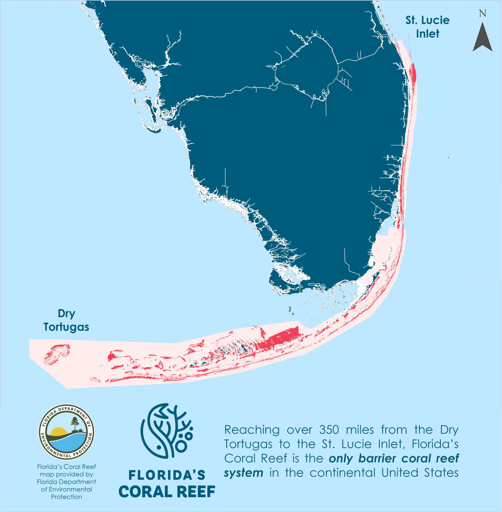

The Florida Reef Tract and its associated seagrass beds stretch over 350 miles from St. Lucie Inlet in Martin County south through the Florida Keys to the Dry Tortugas — forming the only barrier reef system in the continental United States. For thousands of years this coastal ecosystem has supported extraordinary marine biodiversity, protected Florida's shoreline from storms, and anchored one of the most productive coastal economies in the world. Today it faces an existential crisis — decades of warming oceans, ocean acidification, disease, and human impact have reduced live coral cover from a historical 25-40% to less than 2%, while seagrass beds face mounting pressure from heat, turbidity, and runoff. Florida Blue Watch tracks the health of this ecosystem in real time, drawing on live data from NOAA Coral Reef Watch, FDEP, and leading marine research institutions.
Florida Reef Tract map

Live data: NOAA Coral Reef Watch · Map: Florida Department of Environmental Protection
Marine Health Status
Live indicators from NOAA Coral Reef Watch & FDEP
Florida Keys
Key Largo to the Dry Tortugas
Bleaching Alert LevelLoading...Updated daily from NOAA CRW
Sea Surface TemperatureLIVELoading...Sea surface temperature at reef sites
Degree Heating WeeksLIVELoading...Accumulated heat stress over 12 weeks
Southeast Florida
Miami-Dade to St. Lucie Inlet
Bleaching Alert LevelLoading...Updated daily from NOAA CRW
Sea Surface TemperatureLIVELoading...Sea surface temperature at reef sites
Degree Heating WeeksLIVELoading...Accumulated heat stress over 12 weeks
Seagrass Health
Florida Bay & Nearshore Waters
Florida Bay Coverage▼ 60% decline since 2015Source: FWC/FWRI 2024
Biscayne Bay▼ 35% reduction since 2000Source: SFWMD 2024
Keys Nearshore▲ 8% recovery at select sitesSource: FDEP CREMP 2024
Total estimated value of reef-dependent goods and services
Source: NOAA
$4.4B
Annual Local Sales
Revenue from reef-dependent tourism, diving, fishing, and marine industries
Source: NOAA
70,400
Jobs Supported
Full and part-time positions across hospitality, diving, and coastal services
Source: NOAA
$675M
Annual Flood Protection
Property and economic activity protected by reef wave-energy absorption annually
Source: NOAA
Coastal Property Value Impact
Healthy reefs buffer waves, support clear water, and underpin premium coastal real estate. Degradation raises exposure to flooding and erodes the value proposition that drives waterfront markets.
Waterfront premium20–30% above inland properties
Water quality correlationDirect link to reef health
1m reef height loss impact$2.9B in property at risk
Flood plain expansion20km² added, 24,000 more at risk
Source: Storlazzi et al. USGS 2019; Bin et al. 2017
Reef-Seagrass Carbon Ecosystem
Coral reefs and seagrass beds function as a linked carbon system. While coral reefs themselves are net carbon sources, healthy reefs protect adjacent seagrass beds — among the most efficient marine carbon sinks on Earth — by reducing wave energy and enabling sediment accumulation.
Coral reefs are net carbon sources due to calcification. Their conservation value for carbon lies in protecting adjacent seagrass carbon sinks.
Sources: OMICS Online; Frontiers in Marine Science 2020; Springer 2019
Current Economic Value Dependent on Florida's Reef
Annual value at risk if the reef system continues to decline · Sources: NOAA, USGS Storlazzi et al. 2019
Values in millions USD. Employment Income represents ~$2B in local income supported by 70,400 reef-dependent jobs. Sources: NOAA, USGS, Storlazzi et al. 2019
Data last verified: May 2026
Conservation News
Latest from NOAA and reef conservation partners
Showing live articles from NOAA and conservation partners where available